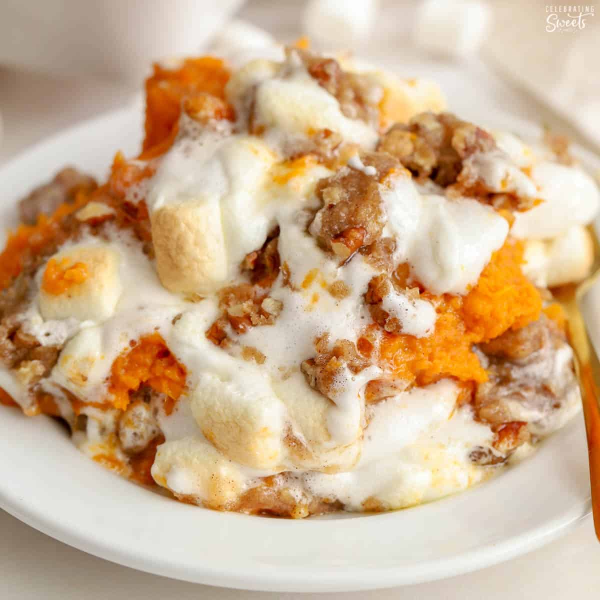

Yummy Sweet Potato Casserole Recipe

Description
This baked sweet potato casserole topped with a delicious pecan topping is so good and creamy — my family begs me to make it every Thanksgiving and Christmas! Try this recipe and I'm sure it will become your new tradition.
ingredients
- Sweet Potato
- Watter
- Butter
- Salt
Steps
- Cook and mash the sweet potatoes.
- Mix the casserole ingredients and transfer to a baking dish.
- Make the topping and sprinkle it over the sweet potato mixture.
- Bake until the topping is lightly browned.